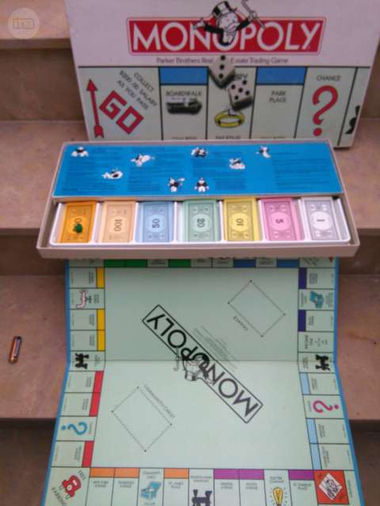
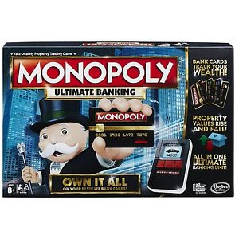

Un juego creado con la función de servir como herramienta para enseñar las teorias acerca de la justicia social y económica extraidas del estudio titulado Progreso y Miseria de Henry George
Comercializado por vez primera en 1936.
A lo largo de 80 años el juego a sufrido una
notable evolución. Sus múltiples ediciones y sus tantas
versiones han dado pie a que se cambiara desde la caja
que lo contiene hasta los elementos que los componen.
Logrando así, mantenerse como el favorito a través de las décadas.
Con los años la finalidad del juego cambió para solo disfrutar un buen rato, negociando propiedades y hasta haciendo uso de medios electrónicos para todas las transacciones que requiere el juego
